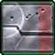
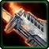

- Stats
- Production
- Abilities/Upgrades
- Strategy
- Lore
- Related

Armor: 1 |
3 with  Building Armor
Mineral Repair Cost:
 31.25
31.25Gas Repair Cost:
 0
0Repair Time:
 35
35 0/0 0 per second
0/0 0 per secondDamage: 0
Attacks: 0
Cooldown: 0
Targets: None
Attack Range: 0
Acceleration: 0
Collision Radius: 1.25
Requirements: Nothing
| Level | Level 1 | Level 2 | Level 3 |
| Minerals | 0 | 0 | 0 |
| Vespene Gas | 0 | 0 | 0 |
| Time | 0 | 0 | 0 |
| Damage Bonus | 0 | 0 | 0 |
| Total Damage | 0 | 0 | 0 |
125Vespene Cost:
0Supply:
 0
0Produced From: SCV Build Time:
35Requirements: Command Center
Unit Type: Armored, Mechanical, Structure, Ground
Requirements: Nothing
| Level | Level 1 | Level 2 | Level 3 |
| Minerals | 0 | 0 | 0 |
| Vespene Gas | 0 | 0 | 0 |
| Time | 0 | 0 | 0 |
| Armor Bonus | 0 | 0 | 0 |
| Total Armor | 1 | 1 | 1 |
| Upgrade | Icon | Minerals | Vespene Gas | Time | Requirements |
| Infantry Weapons 1 |  | 100 | 100 | 160 | Engineering Bay |
| Infantry Weapons 2 |  | 175 | 175 | 190 | Armory |
| Infantry Weapons 3 |  | 250 | 150 | 220 | Armory |
| Infantry Armor 1 |  | 100 | 100 | 160 | Engineering Bay |
| Infantry Armor 2 |  | 175 | 175 | 190 | Armory |
| Infantry Armor 3 |  | 250 | 150 | 220 | Armory |
| Hi-Sec Auto Tracking | 100 | 100 | 80 | Engineering Bay | |
| Building Armor | 150 | 150 | 140 | Engineering Bay | |
| Neosteel Frame | 100 | 100 | 110 | Engineering Bay |
Infantry Armor 1-3: Upgrades the armor of all Infantry units. Each level increases armor by 1.
Hi-Sec Auto tracking: Increases the attack range of Missile Turrets, Auto-Turrets, Point Defense Drones, and Planetary Fortresses by 1.
Building Armor: Increases the armor of all Terran Buildings, including the Auto Turret and Point Defense Drone, by 2.
NeoSteel Frame: Increases the cargo capacity of bunkers by 2 for a toal of 6, and increases the scv load count of Command Centers and Planetary Fortresses by 5 for a total of 10.
| Icon | Minerals | Vespene Gas | Research Time | Researched At |
| 150 | 150 | 140 | Engineering Bay |
Information: Building Armor increases the armor of all Terran buildings by 2. This includes the Point Defense Drone and Auto-Turret as well.
If you have any suggestions for more strategies, go ahead and post on the forums 'here'!
+1 Weapons vs Zerglings
When Zealots have a +1 weapon advantage versus Zerglings, they will kill Zerglings in two attacks instead of three. This makes Zealots very effecient against Zerglings until the zerg catches up in armor upgrades.
Because of this, there are a handful of timing attack that take advantage of the effecient +1 weapon zealots, forcing the zerg to make spines, roaches, or some other unit than zerglings unless the zerg wants to trade inefficiently.
+1 Weapons vs Zerglings
Sum text about how gosu this is
+1 Weapons vs Zerglings
Sum text about how gosu this is
- Overview
The engineering bay is a terran building used to improve the quality of weapons and armor fielded by infantry. Recent encounters with the Zerg and Protoss have required the Terrans to adapt to the more harsh enviorments and ever adapting enemies, because of this the Engineering Bay now posses new researches to upgrade buildings.
The new Engineering Bay comes with the ability to manufacture better targeting systems with the Hi-Sec Auto Tracking, improve building strength with Building Armor, and reduce overhead in Bunkers and Command Centers to increase load capacity. With the new ability to manufature these additions and upgrades, the Engineering lost its ability to become mobile, as these researches indicate a more long term placements into settlements.
{kind=link}
Source Information
Text information from the Starcraft Wiki.
Photo 1 created by Blizzard Entertainment. Copyright: Blizzard Entertainment.
| Terran |
| Units |
| Command Center | SCV | Mule |
| Barracks | Marine | Marauder | Ghost | Reaper |
| Factory | Hellion | Siege Tank | Thor |
| Starport | Medivac | Viking | Banshee | Raven | Battlecruiser |
| Structures |
| Basic Buildings | Command Center | Orbital Command | Supply Depot | Refinery |
| Defensive Buildings | Planetary Fortress | Bunker | Missile Turret | Sensor Tower |
| Infantry Buildings | Barracks | Engineering Bay | Ghost Academy |
| Mechanical Buildings | Factory | Starport | Armory | Fusion Core |
| Add-ons/Spawned | Auto-Turret | Point Defense Drone | Tech Lab | Reactor |